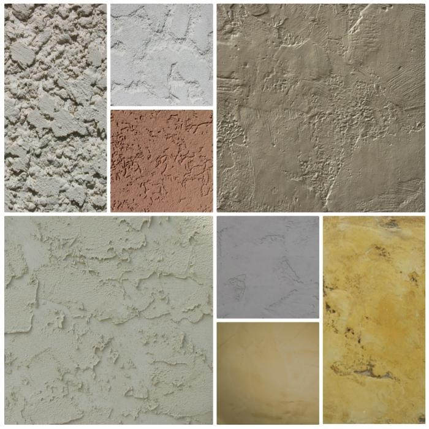
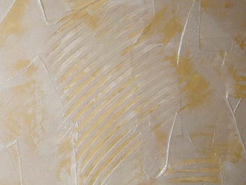
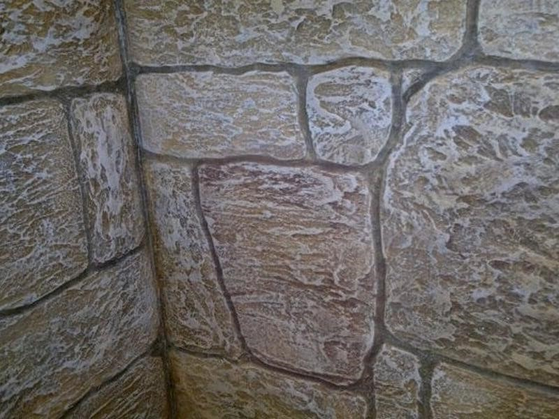

Штукатурка — отделочный слой, образованный затвердевшим строительным раствором.
По назначению штукатурки бывают:
Виды специальных штукатурок:
Рентгенозащитная: предназначена для формирования покрытий, обладающих способностью задерживать рентгеновские излучения.
Акустическая: применяется для снижения шума в помещениях.
Теплоизоляционная: разновидность строительных растворов, характеризующихся способностью формировать на поверхностях ограждающих конструкций (наружных и внутренних стен, перегородок, перекрытий) слои покрытий, препятствующих теплопередаче.
Санирующая: штукатурная система, предназначенная для проведения ремонтно-восстановительных работ в старых зданиях в условиях увлажнения и засоления каменной и кирпичной кладок.
Кислотостойкая: предназначена для отделки внутренних поверхностей стен в цехах химических заводов.
Торкрет-штукатурка: получается путем набрызгивания раствора на подготовленную поверхность бетона с помощью сжатого воздуха, т. е. торкретированием. Применяется для оштукатуривания бассейнов, сырых подвалов.
Водонепроницаемая: используют для гидроизоляции резервуаров, бассейнов, подземных камер и хранилищ, туннелей.
Применяется при отделке фасадов зданий и интерьеров, а также при заводской отделке лицевых поверхностей строительных деталей и конструкций.
Виды декоративной штукатурки:
Известково-песчанная: декоративная штукатурная смесь, содержащая в качестве вяжущего известь-пушонку, а в качестве заполнителя — белый кварцевый песок или песок, полученный дроблением известняка. Используется для отделки фасадов деревянных, кирпичных зданий, зданий из шлакобетонных блоков, а также для внутренней отделки помещений.

Терразитовая: декоративная штукатурная смесь, состоящая из одного или двух вяжущих материалов (одним из которых обязательно яляется гидратная известь), из заполнителей различной крупности (каменной крошки, стекла, слюды) и пигментов.

Каменная: применяется для имитации структуры и фактуры природных каменных материалов, а также для ремонта и реставрации поверхности изделий из природного камня.

Сграффито: разновидность монументально-декоративной живописи, принцип которой основан на процарапывании верхнего тонкого слоя штукатурки до обнажения нижнего слоя, отличающегося по цвету от верхнего.
По качеству штукатурки бывают:
По способу изготовления штукатурки бывают: